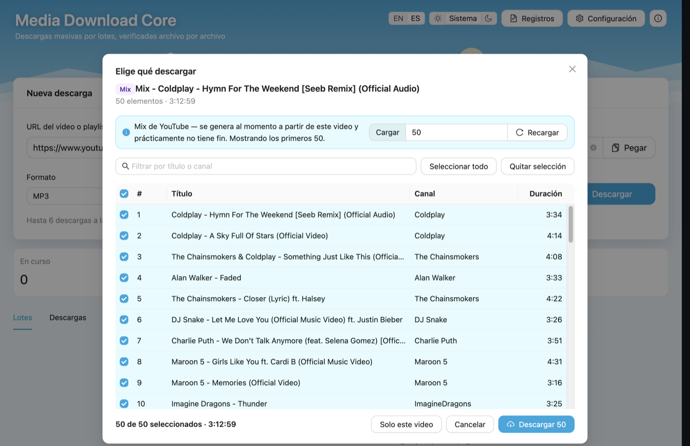
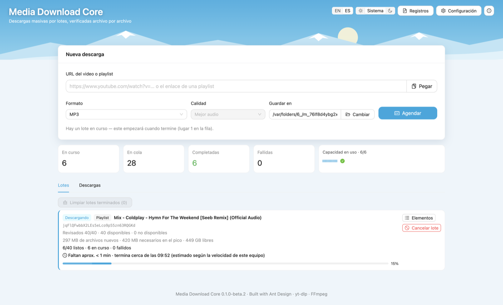
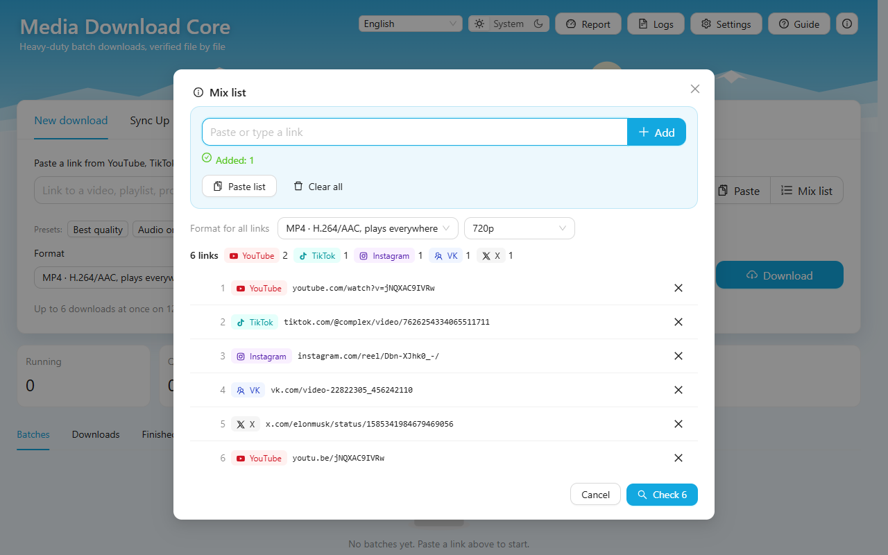
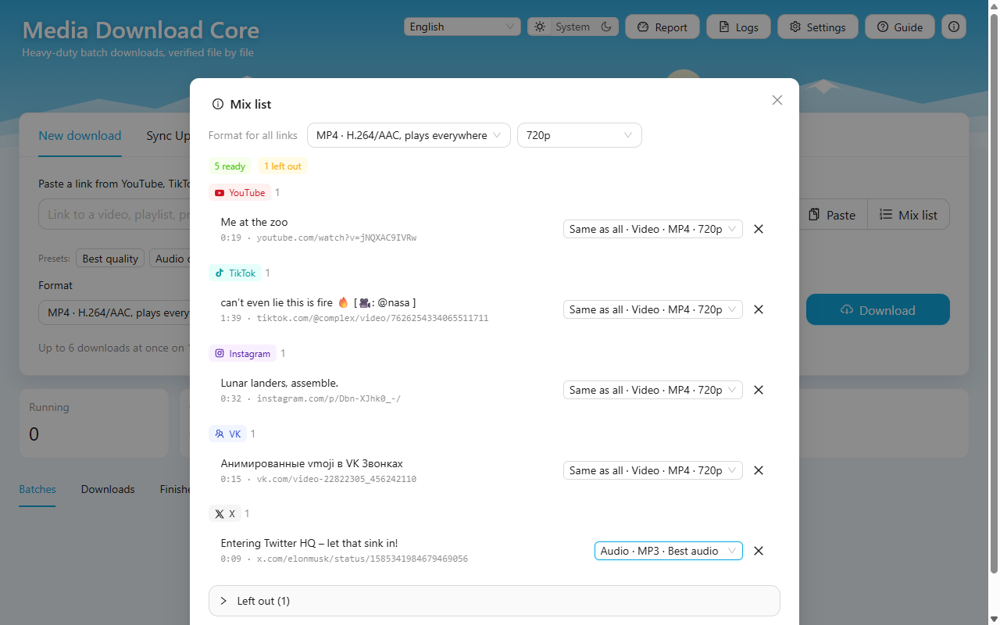
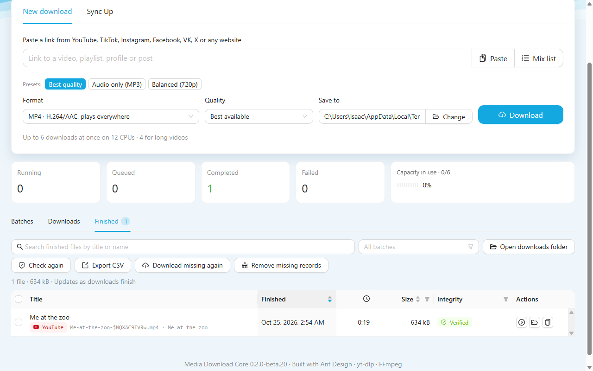
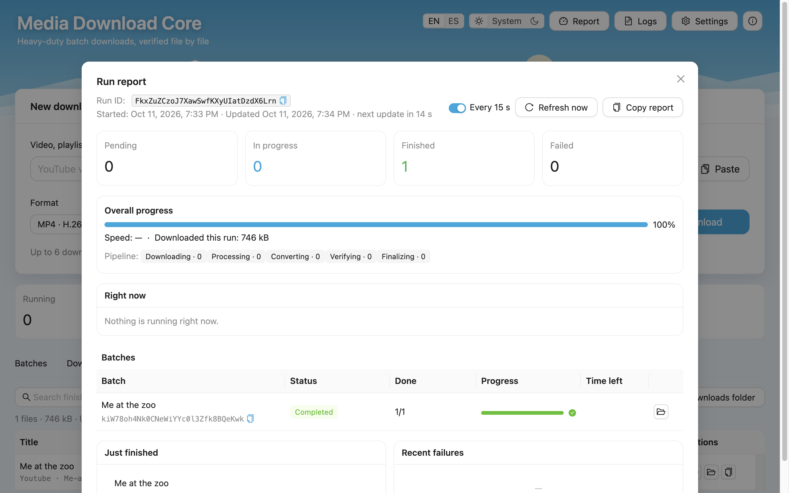
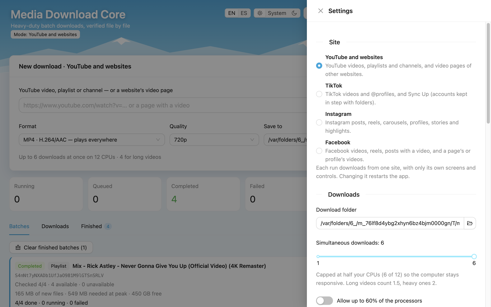
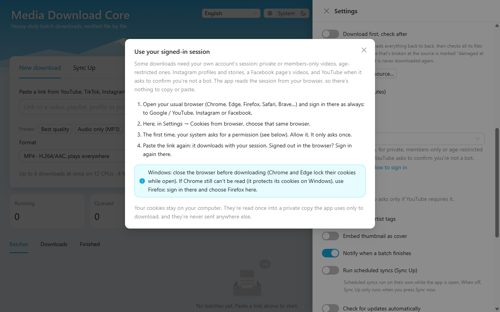

पाँच नई साइटें
Threads, Bluesky, Twitch, SoundCloud और Snapchat: पोस्ट, कैरोसेल, वीडियो, ट्रैक और पूरी सार्वजनिक प्रोफ़ाइल, ऐप ख़ुद पढ़ता है — हर दूसरे डाउनलोड जैसी ही जाँच के साथ।
एक लिंक पेस्ट करें, जो चाहिए वह चुनें, और इसे सैकड़ों वीडियो या गाने डाउनलोड करने दें जबकि यह हर एक फ़ाइल की जाँच करता है — फिर सब कुछ एक ही जगह पाएँ, चलाने के लिए तैयार।
पाँच और साइटें जिन्हें ऐप ख़ुद पढ़ता है, Twitch के लाइव चैनल रिकॉर्ड करना और देखना, और एक सूची जो बताती है कि हर साइट से क्या डाउनलोड होता है।
Threads, Bluesky, Twitch, SoundCloud और Snapchat: पोस्ट, कैरोसेल, वीडियो, ट्रैक और पूरी सार्वजनिक प्रोफ़ाइल, ऐप ख़ुद पढ़ता है — हर दूसरे डाउनलोड जैसी ही जाँच के साथ।
प्रसारण पर चल रहा चैनल पेस्ट करें और रिकॉर्ड दबाएँ: यह तब तक चलता है जब तक आप रोकें, स्ट्रीम ख़त्म हो या 12 घंटे हो जाएँ, विज्ञापनों के बिना। रोकें और सहेजें इसे रखता है; हटाएँ इसे मिटा देता है।
देखें स्ट्रीम का प्लेयर खोलता है, अकेले या रिकॉर्डिंग के साथ। प्लेयर बंद करने से रिकॉर्डिंग कभी नहीं रुकती।
पिछले प्रसारण, हाइलाइट और SoundCloud ट्रैक टुकड़ों में, कई एक साथ आते हैं और बिना री-एन्कोड के जुड़ते हैं: एक घंटे का 1080p60 वीडियो लगभग साढ़े सात मिनट में आया, फ़्रेम दर फ़्रेम जाँचा हुआ।
एक सूची बताती है कि हर साइट से क्या डाउनलोड होता है, क्या साइन-इन चाहिए और क्या Android ऐप में यह है — इस पेज पर, ऐप में और आपके पेस्ट किए हर लिंक के नीचे।
आप जिन निजी Threads प्रोफ़ाइल को फ़ॉलो करते हैं और Twitch के सिर्फ़ सब्सक्राइबर वाले वीडियो उसी ब्राउज़र के सेशन से खुलते हैं जो आप पहले से इस्तेमाल करते हैं। कभी पासवर्ड नहीं माँगा जाता।
ज़्यादातर डाउनलोडर एक समय में एक वीडियो संभालते हैं। यह पूरी प्लेलिस्ट, पूरी प्रोफ़ाइल, पूरी खोज के लिए बना है — और तब भी चलते रहने के लिए जब आप कुछ और कर रहे हों।
YouTube की प्लेलिस्ट, चैनल और Mix; TikTok, Instagram, Facebook, Threads, Bluesky, Snapchat और SoundCloud की पूरी प्रोफ़ाइल, कैरोसेल समेत (वीडियो के रूप में, या आवाज़ के साथ तस्वीरों के रूप में); Twitch के वीडियो और लाइव चैनल; X और VK — किसी पुराने अकाउंट की हज़ारों पोस्ट के लिए “सब लोड करें” के साथ।
प्रीव्यू किसी लिंक की हर चीज़ अवधि और प्रकाशन तिथि के साथ दिखाता है। फ़िल्टर करें, सब या केवल कुछ चुनें — सिर्फ़ आपका चुना हुआ ही डाउनलोड होता है। या किसी भी साइट के लिंक एक मिक्स सूची में इकट्ठा करें: एक बैच, हर लिंक के लिए आपके चुने फ़ॉर्मैट के साथ।
हर डाउनलोड की जाँच होती है — कोडेक, अवधि, हर फ़्रेम डिकोड — और उसका SHA-256 दर्ज होता है। खराब फ़ाइल दोबारा डाउनलोड होती है; जो स्रोत पर ही खराब हो, उसे चिह्नित किया जाता है और कभी दो बार डाउनलोड नहीं किया जाता।
“पूरे हुए” टैब हर सत्र की हर फ़ाइल बैच-दर-बैच रखता है: खोजें, चलाएँ, फ़ोल्डर में दिखाएँ, दोबारा जाँचें, सूची एक्सपोर्ट करें। अगर कुछ विफल हुआ, तो एक क्लिक फिर से कोशिश करता है — और आप कारण देखते हैं।
क्या बाकी है, डाउनलोड हो रहा है, सत्यापित हो रहा है और पूरा हुआ — हर बैच के लिए, बचे समय के साथ, हर 15 सेकंड में रीफ़्रेश। एक क्लिक में टेक्स्ट के रूप में कॉपी करें।
शुरू करने से पहले बैच बताता है कि उसे कितनी जगह चाहिए। चलते समय बचा समय आपके कंप्यूटर की असली गति से मापा जाता है — बड़ा बैच शुरू करें और निश्चिंत हो जाएँ।
H.264/AAC में MP4, कार स्टीरियो द्वारा पढ़े जाने वाले टैग के साथ MP3, और सादे अक्षरों व अंकों वाले फ़ाइल नाम जिन्हें हर USB ड्राइव स्वीकार करती है। या M4A, Opus, FLAC, WAV, WebM, MKV।
हर फ़ाइल में उसकी प्रकाशन तिथि होती है, इसलिए फ़ोल्डर को तिथि से क्रमबद्ध करने पर आपका बैकअप प्रकाशन के क्रम में लगता है — डाउनलोड के मिनट के क्रम में नहीं।
नए संस्करण ऐप के अंदर ही आते हैं: एक बटन उन्हें डाउनलोड करता है, GitHub के SHA-256 से जाँचता है, इंस्टॉल करता है और रीस्टार्ट करता है। इसके टूल (yt-dlp, FFmpeg) भी इसी तरह सेट होते हैं।
किसी TikTok खाते को उसके फ़ोल्डर से जोड़ें — चाहे उसमें पहले से वीडियो हों — और हर सिंक सिर्फ़ वही लाता है जो नहीं है, फ़ोल्डर के फ़ॉर्मैट में। हर दिन तय समय पर, हर कुछ घंटों में, या जब चाहें।
इसे बैकग्राउंड में काम करने दें: बैच पूरा होने पर सिस्टम सूचना आती है, और Dock या टास्कबार का आइकन प्रगति दिखाता है।
वही इंजन टर्मिनल (mdc) और आपके अपने कोड से चलता है — ऐप खोले बिना cron, launchd या टास्क शेड्यूलर से खाता सिंक शेड्यूल करें।
हर साइट से क्या डाउनलोड होता है, क्या साइन-इन चाहिए, और क्या Android ऐप में यह है।
| साइट | क्या डाउनलोड होता है | साइन-इन | Android ऐप |
|---|---|---|---|
| YouTube | वीडियो, Shorts, प्लेलिस्ट, चैनल और Mix | निजी, सिर्फ़ सदस्यों वाले और उम्र-प्रतिबंधित वीडियो के लिए | सिर्फ़ डेस्कटॉप |
| TikTok | वीडियो, फ़ोटो पोस्ट और पूरी प्रोफ़ाइल | ज़रूरी नहीं | हाँ |
| पोस्ट, रील, कैरोसेल, प्रोफ़ाइल, स्टोरी और हाइलाइट | स्टोरी, हाइलाइट और निजी अकाउंट के लिए | हाँ | |
| वीडियो, रील और किसी पेज के वीडियो | ज़्यादातर वीडियो और स्टोरी के लिए | हाँ | |
| Twitch | क्लिप, पिछले प्रसारण, हाइलाइट, चैनल और लाइव रिकॉर्डिंग | सिर्फ़ सब्सक्राइबर वाले वीडियो और स्ट्रीम के लिए | हाँ |
| SoundCloud | ट्रैक, सेट और सार्वजनिक प्रोफ़ाइल | ज़रूरी नहीं | हाँ |
| X | वीडियो, GIF या फ़ोटो वाली पोस्ट | ज़रूरी नहीं | हाँ |
| Threads | पोस्ट, कैरोसेल और सार्वजनिक प्रोफ़ाइल | निजी अकाउंट के लिए | हाँ |
| Bluesky | पोस्ट, गैलरी, वीडियो और सार्वजनिक प्रोफ़ाइल | ज़रूरी नहीं | हाँ |
| Snapchat | Spotlight, स्टोरी, हाइलाइट और सार्वजनिक प्रोफ़ाइल | ज़रूरी नहीं | हाँ |
| VK | वीडियो और प्लेलिस्ट | निजी और प्रतिबंधित वीडियो के लिए | हाँ |
| दूसरी वेबसाइटें | yt-dlp जिन दूसरी साइटों को जानता है, उनके वीडियो | जो साइटें इसे मांगती हैं के लिए | सिर्फ़ डेस्कटॉप |
| फ़ाइल का लिंक | वीडियो, ऑडियो या तस्वीर फ़ाइल का सीधा लिंक | ज़रूरी नहीं | हाँ |
कोई कमांड लाइन नहीं, पहले सीखने के लिए कोई सेटिंग नहीं — पहली बार एक छोटी गाइड आपको सब दिखाती है। चौदह भाषाओं में, लाइट या डार्क।
एक वीडियो, एक प्लेलिस्ट, एक चैनल, किसी भी समर्थित साइट की प्रोफ़ाइल, Twitch का लाइव चैनल — या किसी भी साइट के लिंक की पूरी सूची।
इसमें जो कुछ भी है, पहले उसकी सूची बनती है। MP4 या MP3, गुणवत्ता और फ़ोल्डर चुनें।
एक साथ कई डाउनलोड, हर एक सत्यापित। रिपोर्ट देखते रहें, या बाद में लौटें।








निजी या केवल-सदस्य वीडियो, आयु-प्रतिबंधित वीडियो, Instagram प्रोफ़ाइल और स्टोरी, Facebook पेज के वीडियो — और YouTube जब आपसे पुष्टि करने को कहे कि आप बॉट नहीं हैं — इनके लिए आपका अपना खाता चाहिए। ऐप कभी पासवर्ड नहीं माँगता: यह उस ब्राउज़र का सत्र इस्तेमाल करता है जिसमें आप पहले से साइन इन हैं।
Chrome, Edge, Firefox, Safari या Brave — Google / YouTube, Instagram या Facebook में, हमेशा की तरह।
सेटिंग्स → ब्राउज़र से कुकीज़ → वही ब्राउज़र। “साइन इन कैसे करें” ये चरण दिखाता है।
आपका सिस्टम पहली बार अनुमति माँगता है (अपना नीचे देखें)।
यह आपके सत्र के साथ डाउनलोड होता है। साइन आउट हो गए? ब्राउज़र में फिर से साइन इन करें।
एक Keychain विंडो ऐप को “Chrome Safe Storage” (या आपके ब्राउज़र का) पढ़ने देने के लिए पूछती है: अपना Mac पासवर्ड लिखें और हमेशा अनुमति दें पर क्लिक करें। Safari: सिस्टम सेटिंग्स → गोपनीयता और सुरक्षा → पूर्ण डिस्क एक्सेस → Media Download Core चालू करें।
डाउनलोड से पहले ब्राउज़र बंद करें — Chrome और Edge खुले रहने पर अपनी कुकीज़ लॉक कर देते हैं। अगर Chrome फिर भी नहीं पढ़ा जा सके (Windows पर यह अपनी कुकीज़ सुरक्षित रखता है), तो Firefox से साइन इन करें और Firefox चुनें।
Fedora, Ubuntu और अन्य पर, आपका कीरिंग (GNOME Keyring / KWallet) ब्राउज़र के सहेजे डेटा तक पहुँच की अनुमति माँग सकता है: अनुमति दें। Firefox कुछ नहीं पूछता।
आपकी कुकीज़ आपके कंप्यूटर पर रहती हैं: वे केवल डाउनलोड के लिए इस्तेमाल होने वाली एक निजी कॉपी में एक बार पढ़ी जाती हैं, और कभी कहीं और नहीं भेजी जातीं।
सबसे नया संस्करण हमेशा GitHub Releases पर है।
पहली बार खोलना: सिस्टम सेटिंग्स → गोपनीयता और सुरक्षा → “फिर भी खोलें” (एक बार)। यह अभी सशुल्क Apple प्रमाणपत्र से साइन नहीं है।
“फिर भी खोलें” बटन नहीं है? ऐप को Applications में खींचें और Terminal में इसे एक बार चलाएँ:
xattr -dr com.apple.quarantine "/Applications/Media Download Core.app"
चेतावनी क्यों? यह घर पर बना एक मुफ़्त प्रोजेक्ट है, और अभी सशुल्क Microsoft प्रमाणपत्र से साइन नहीं है। चेतावनी उस गायब हस्ताक्षर के बारे में है, फ़ाइल के बारे में नहीं — इसका कोड GitHub पर सार्वजनिक है, और जैसे-जैसे ज़्यादा लोग इसे इंस्टॉल करते हैं, Windows पूछना बंद कर देता है।
ARM64 के लिए .deb और .rpm भी रिलीज़ पेज पर हैं।
ऐप का हर संस्करण, सबसे नए से शुरू: हर एक में क्या बदला, और उसके इंस्टॉलर।